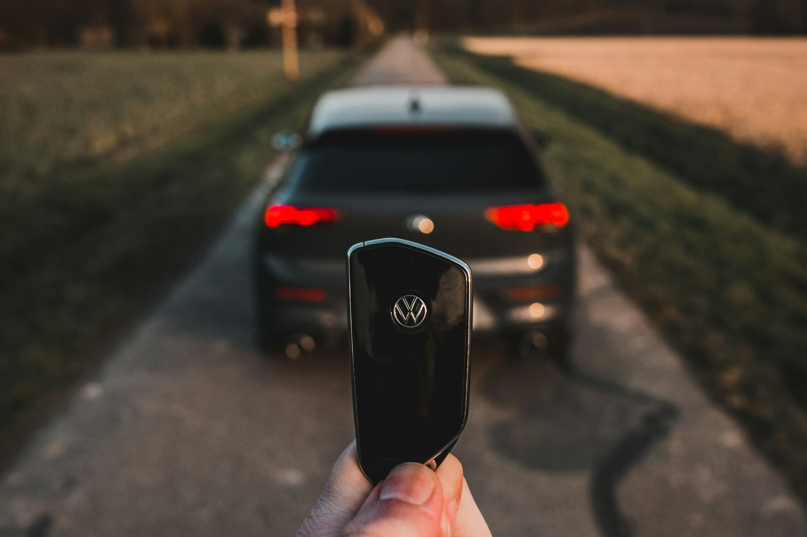

Autonomous vehicles have transitioned from being a off vision, to an approaching reality thanks to the integration of AI technology. These self driving cars hold the promise of transforming transportation as we know it. Recently a thought provoking Twitter thread piqued my interest in how AI’s propelling this journey forward. Lets delve into the workings of vehicles the technologies driving them and the obstacles they must overcome. Get ready for an exhilarating journey into the future of transportation.
Table of Contents
What Defines Autonomous Vehicles?
At the heart of vehicles lie AI systems that possess the ability to perceive their surroundings and make instantaneous decisions. These systems leverage models and vast datasets to empower cars to “see” and “reason.” Through machine learning algorithms these vehicles can interpret information from their environment – including vehicles, pedestrians and road conditions – facilitating effective navigation.
Different Levels of Autonomy
The progression towards vehicles is segmented into five distinct levels;
Level 0 signifies no automation; all tasks remain solely within the realm of human drivers.
Level 1; Driver assistance functionalities include features like cruise control and lane keeping assistance, for added convenience.
Level 2; Semi automated. The car is able to control steering and speed. It still needs input.
Level 3; automation. The car can manage tasks but humans are required to step in when needed.
Level 4; Highly automated. In situations the vehicle can handle all driving activities without intervention.
Level 5; automation. The car can drive itself under any circumstances, without involvement.
Currently most cars fall under Levels 2 and 3. Achieving Level 5 will require advancements, in technology. Gaining public trust.
{kind=link}
Photo by Roberto Nickson on Unsplash
Technologies Used in Autonomous Vehicles
vehicles utilize lidar, radar, cameras and ultrasonic sensors to collect data. These technologies provide information to the vehicles AI system, which uses learning algorithms to analyze and respond to road conditions.
Lidar technology uses laser beams to create 3D maps of the surroundings while radar measures the distance and speed of objects. Cameras capture information to help AI recognize objects and road signs and ultrasonic sensors assist in close range object detection during parking. By combining these technologies vehicles can navigate environments avoid obstacles and ensure passenger safety.
Facing Challenges
A hurdle, in autonomous vehicle development is AI ethics. How should an autonomous vehicle respond in emergencies? The use of ” algorithms” is crucial as they dictate the cars decision making in life or death situations. Another challenge lies in preparing AI for real world scenarios ranging from drivers to unexpected obstacles.
Economic Implications
The automation of transportation offers promises of efficiency and sustainability. Also raises concerns about job displacement in driving professions. Striking a balance between these impacts is crucial for acceptance. The introduction of vehicles could lead to job opportunities in technology and maintenance sectors while reducing the demand for human drivers.
Field Testing and Trials
Cities worldwide are serving as test sites, for self driving cars.
These experiments help collect information and enhance AI algorithms, in real world scenarios. For instance Waymos extensive tests across cities in the US have offered insights into the practical obstacles of self driving cars.
{kind=link}
Photo by Obi - @pixel8propix on Unsplash
Autonomous Vehicles Looking Forward
The future of driverless vehicles shows promise. Comes with intricate cross disciplinary hurdles. Progress in 5G technology, the Internet of Things (IoT) and sophisticated AI models is propelling this advancement. It’s an exhilarating period for data experts and engineers engaged in these state of the art technologies.
Example
To demonstrate how AI functions in vehicles lets examine a straightforward Python illustration showcasing object detection using a pretrained deep learning model.
import cv2
import numpy as np
# Load a pre-trained model for object detection
net = cv2.dnn.readNet('yolov3.weights', 'yolov3.cfg')
layer_names = net.getLayerNames()
output_layers = [layer_names[i[0] - 1] for i in net.getUnconnectedOutLayers()]
# Load an image
img = cv2.imread('test_image.jpg')
height, width, channels = img.shape
# Detecting objects
blob = cv2.dnn.blobFromImage(img, 0.00392, (416, 416), (0, 0, 0), True, crop=False)
net.setInput(blob)
outs = net.forward(output_layers)
# Showing information on the screen
class_ids = []
confidences = []
boxes = []
for out in outs:
for detection in out:
scores = detection[5:]
class_id = np.argmax(scores)
confidence = scores[class_id]
if confidence > 0.5:
center_x = int(detection[0] * width)
center_y = int(detection[1] * height)
w = int(detection[2] * width)
h = int(detection[3] * height)
x = int(center_x - w / 2)
y = int(center_y - h / 2)
boxes.append([x, y, w, h])
confidences.append(float(confidence))
class_ids.append(class_id)
# Apply non-max suppression
indexes = cv2.dnn.NMSBoxes(boxes, confidences, 0.5, 0.4)
for i in range(len(boxes)):
if i in indexes:
x, y, w, h = boxes[i]
label = str(class_ids[i])
cv2.rectangle(img, (x, y), (x + w, y + h), (0, 255, 0), 2)
cv2.putText(img, label, (x, y + 30), cv2.FONT_HERSHEY_PLAIN, 3, (0, 255, 0), 3)
# Show the image
cv2.imshow("Image", img)
cv2.waitKey(0)
cv2.destroyAllWindows()This program showcases how a sophisticated neural network model can identify objects, in an image, an element in how self driving vehicles perceive their environment.

Photo by Chris Kursikowski on Unsplash
Key Points
Self driving vehicles present a solution for transportation. By embracing and utilizing intelligence machine learning and sensor technologies we can progress towards a future where autonomous cars become mainstream. Whether you’re a data scientist or just starting out the process of developing self driving vehicles opens up opportunities for learning and innovation.
Stay Updated on Autonomous Vehicles
Interested in discussions, on AI and self driving cars? Feel free to connect with me on platforms to stay updated and gain insights.
X/Twitter: @feddernico
Medium; @federico.viscioletti
Substack; Feddernico
Lets shape the future together!